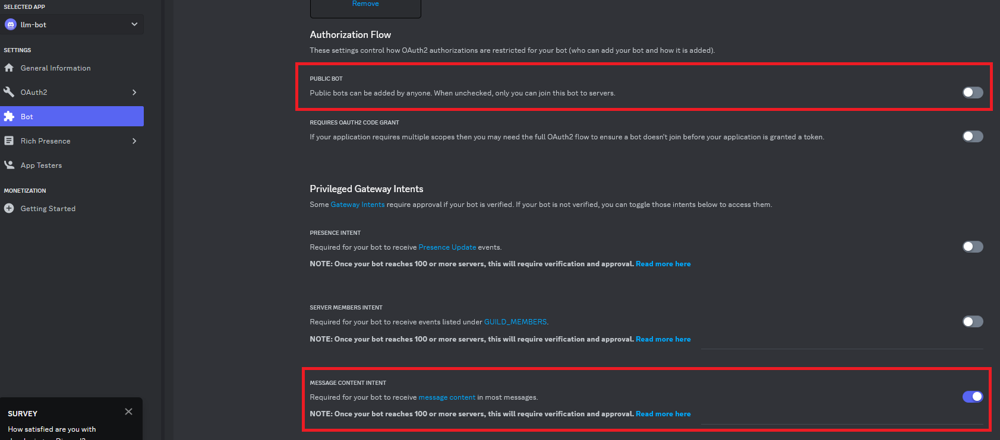
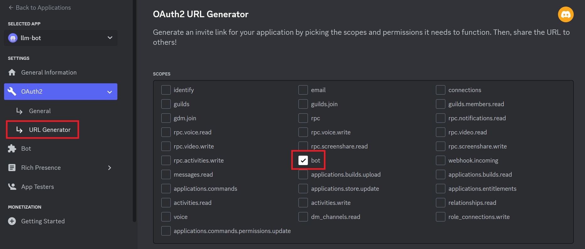
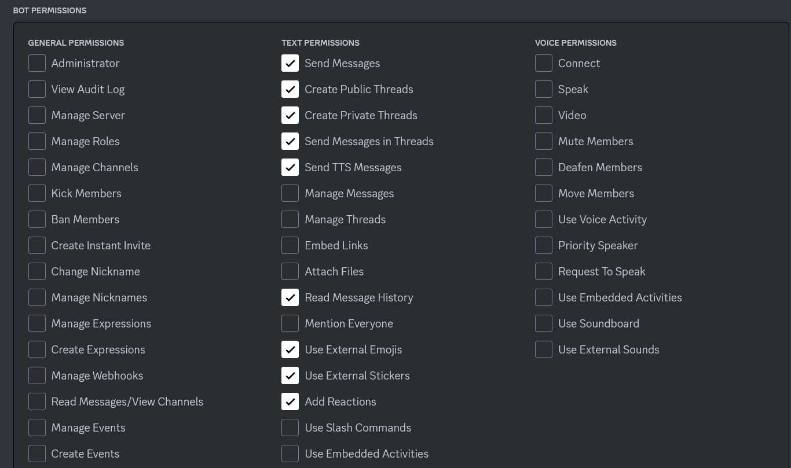
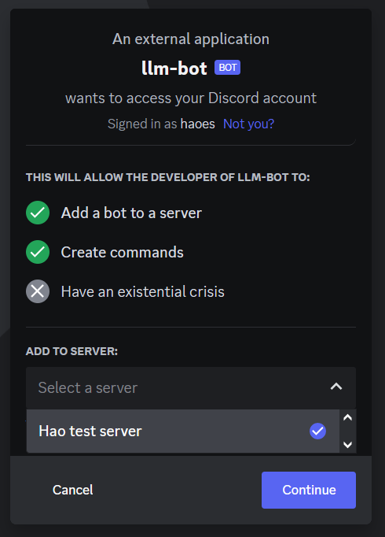
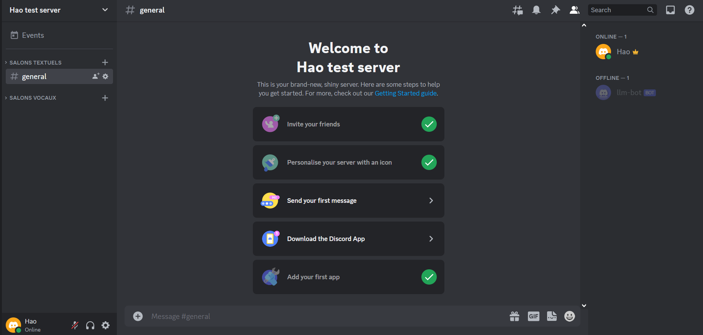
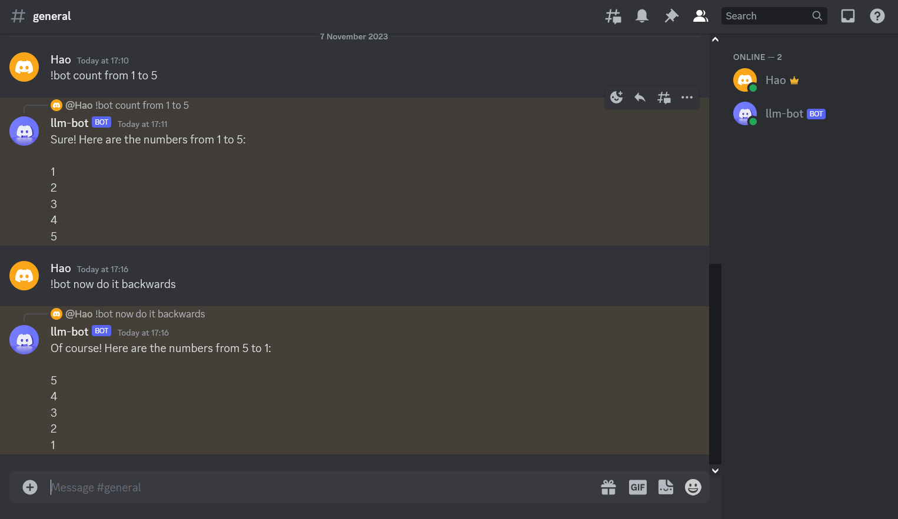

Create a LLM-powered Discord Bot
In this beginner friendly blog post we are going to build an LLM-powered Discord Bot using llama.cpp, here are the steps we are going to follow: 1. Download a LLM from huggingface 2. Setup a REST API to use this model 3. Create a Discord Bot Application 4. Use the REST API to operate the bot
This is a beginner friendly tutorial and assumes only basic knowledge of Python and Linux. I will be working in Ubuntu 20.04 installed on WSL2 but any other Linux distribution should work too.
1. Prerequisites:
1.1 Tools:
Let’s start first with an update to apt to get the latest metadata for Ubuntu packages. Open your Linux/WSL2 terminal and type the following command:
Now let’s install some packages that we’re going to need.
virtualenvis a tool to create isolated Python environments. It creates a folder which contains all the necessary executables to use the packages that a Python project would need. It’s better to create a virtual environment for each project so that even if we mess up our installations, the mess wouldn’t spread to all of the system.
pipis the standard package manager for Python is pip . It allows you to install and manage packages that aren’t part of the Python standard library.curlcurl (short for “Client URL”) is a command line tool that enables data transfer over various network protocols. It communicates with a web or application server by specifying a relevant URL and the data that need to be sent or received.jqis a lightweight and flexible command-line JSON processor that we will use to parse and format replies from our API.
Now that we installedpiplet’s install more tools that we’re going to need:
discord.pyis a Python library that exhaustively implements Discord’s APIs in an efficient and Pythonic way. This includes utilizing Python’s implementation of Async IO.python-dotenveads key-value pairs from a . env file and can set them as environment variables. It helps in the development of applications following the 12-factor principles.
1.2 The Model:
We are going to use llama.cpp so you should download a model that is compatible with it. You can browse HuggingFace and check the model card to see if it is compatible with llama.cpp. Another way is to download models with the GGUF extension.
I am going to be using the Llama-2-7B-Chat-GGUF by TheBloke available here.
In the model card we can see that there are many versions of that model, the difference between each version is the quantisation method, you can see the size of each version and how much RAM it needs to operate. I downloaded the llama-2-7b-chat.Q5_K_M.gguf version.
To download a model you must go to the Files and Versions Tab and right-click on the model you want then choose Copy Link.
Now type you can download using the wget command in the terminal like this:
If you don’t have wget already installed, you can install it by simply typing:
If you want a better quality of replies and also have the adequate hardware for it, you can download larger models (i.e. 13B and higher).
1.3 Setting up the project files:
Now let’s create a directory for our project.
We can do that by the following command:
Now let’s access our newly created folder using:
We create a virtual environment that we will call env:
Once created, we need to activate our environment
You will see now that your terminal has a (env) it means that your virtual environment is active.
We will be using Python bindings for LLAMA-CPP. In the Python bindings page, go down to the Web Server section and use the following command to install the Python Bindings:
2. Using the Model:
Now let’s load our downloaded model. To do so we use the following command:
Here I am using the llama-2-7b-chat.Q5_K_M.gguf model, which I downloaded to my home folder hence the ~ in the path. So the command above must point to the gguf file of the model you downloaded. After running that command you should get a result on the terminal similar to this:
INFO: Started server process [3414]
INFO: Waiting for application startup.
INFO: Application startup complete.
INFO: Uvicorn running on http://localhost:8000 (Press CTRL+C to quit)Let’s now navigate to http://localhost:8000/docs to the OpenAPI schemas.
Since we are building a ChatBot what interests us is the POST request for creating chat completion.
Click on /v1/chat/completions and copy the code from the Example Value field.
The code is:
Go back to your terminal and in a new tab (because the first one is still running your model, do not touch it) create a new file in your project directory, name it payload.json.
I use neovim, you can use your preferred text editor.
paste the code you copied from the docs into the newly created json file, there are two message objects in the code we copied, one where the role is system and the other where the role is user.
We won’t need the one for system since we are not aiming to modify the model’s behavior so let’s delete it.
The code should now look like this:
for the user message we need the change the query string to match the prompt supported by our model, we can do this by adding ### Response: at the end of the content field.
The code should look like this:
We are good to go! Save and Close your file ESC+:qw if you are using vim/neovim ;)
Now let’s test our model. Write the following command in the terminal
It may take a while to give a result Then it should outputs you a response like this:
{"id":"chatcmpl-e219bd31-4515-4f1c-bc57-ea0d4e4f4907","object":"chat.completion","created":1699287163,"model":"/home/llama-2-7b-chat.Q5_K_M.gguf","choices":[{"index":0,"message":{"role":"assistant","content":" The capital of France is Paris."},"finish_reason":"stop"}],"usage":{"prompt_tokens":35,"completion_tokens":7,"total_tokens":42}}It may take a while to give a result Then it should outputs you a response like this:
{"id":"chatcmpl-e219bd31-4515-4f1c-bc57-ea0d4e4f4907","object":"chat.completion","created":1699287163,"model":"/home/llama-2-7b-chat.Q5_K_M.gguf","choices":[{"index":0,"message":{"role":"assistant","content":" The capital of France is Paris."},"finish_reason":"stop"}],"usage":{"prompt_tokens":35,"completion_tokens":7,"total_tokens":42}}%We can see in the content field that our model got the right response " The capital of France is Paris."
We can see this more clearly if we format the output of our model using jq by piping it at the end of the curl request like this:
You will get a better formatted and more readable result like this one:
{
"id": "chatcmpl-a326fe62-8e64-4d12-b21d-84eecb18fe71",
"object": "chat.completion",
"created": 1699287412,
"model": "/home/llama-2-7b-chat.Q5_K_M.gguf",
"choices": [
{
"index": 0,
"message": {
"role": "assistant",
"content": " The capital of France is Paris."
},
"finish_reason": "stop"
}
],
"usage": {
"prompt_tokens": 35,
"completion_tokens": 7,
"total_tokens": 42
}
}Now let’s ask it for something more complex, let’s go back and edit our prompt in the payload.json file:
Save the file and run the same curl command again (use the up arrow in keyboard the retrieve old commands in the terminal)
The output is:
{
"id": "chatcmpl-cadcbf3f-e72b-4934-b1c5-5e761547e9ef",
"object": "chat.completion",
"created": 1699289318,
"model": "/home/llama-2-7b-chat.Q5_K_M.gguf",
"choices": [
{
"index": 0,
"message": {
"role": "assistant",
"content": " Quantum physics, also known as quantum mechanics, is a branch of physics"
},
"finish_reason": "length"
}
],
"usage": {
"prompt_tokens": 37,
"completion_tokens": 16,
"total_tokens": 53
}
}The reply that our model gave (which is found in the content field) is short, the model stopped before giving the whole answer, we can know the reason why by looking at the finish_reason field, we see that the reason is length.
This is due to the maximum token length which is set by default to 16.
We can change this in the body of the query by editing the payload.json like this:
Save and run the curl command again, now we have a longer (and much slower) response:
{ “id”: “chatcmpl-17562ec9-6e71-4b0b-8057-b63db37b165f”, “object”: “chat.completion”, “created”: 1699290401, “model”: “/home/llama-2-7b-chat.Q5_K_M.gguf”, “choices”: [ { “index”: 0, “message”: { “role”: “assistant”, “content”: ” Quantum physics, also known as quantum mechanics, is a branch of physics that explores the behavior of matter and energy at the smallest scales, at which the classical laws of physics no longer apply. At these scales, the principles of quantum mechanics govern the behavior of particles and systems, leading to phenomena such as superposition, entanglement, and wave-particle duality.physics is based on the idea that particles, such as electrons and photons, can exist in multiple states simultaneously, a concept known as superposition. This means that a quantum particle can be in more than one place at the same time, or have more than one set of properties, such as spin or energy, at the same time.fundamental aspect of quantum physics is entanglement, which occurs when two or more particles become connected in such a way that their properties are correlated, regardless of the distance between them. This means that if something happens to one particle, it will instantly affect the other entangled particles, regardless of how far apart they are.one of the most counterintuitive aspects of quantum physics is wave-particle duality. According to this principle, particles can exhibit both wave-like and particle-like behavior depending on how they are observed. This means that a quantum particle can display properties of a wave, such as diffraction and interference, or properties of a particle, such as having definite position and momentum.physics has many practical applications in technology, including transistors, lasers, and computer chips. It also has the potential to revolutionize fields such as medicine, energy production, and materials science. However, quantum physics is still an area of ongoing research and debate, with many unanswered questions and unresolved paradoxes.summary, quantum physics is a branch of physics that explores the behavior of matter and energy at the smallest scales, where the classical laws of physics no longer apply. It is based on principles such as superposition, entanglement, and wave-particle duality, which lead to counterintuitive phenomena and have many practical applications in technology and other fields.” }, “finish_reason”: “stop” } ], “usage”: { “prompt_tokens”: 37, “completion_tokens”: 453, “total_tokens”: 490 } }
2.1 chat.py
Writing curl requests each time is tedious, let’s write a script to do make life easier for us:
For our script we will use the aiohttp. The quickstart example is enough for what we want to do.
Let’s copy the imports and the first example into our new script file that we will create in our project directory and we will call it chat.py:
Now when we paste the imports and first example our file is like that:
We must modify few things to make this work: First we create the following variables: must use a POST request instead of a GET request in line 5.
Then we need to use a POST request instead of a GET request and we also need to specify our API_URL, headers, and payload like this:
Now in order for our payload to get parsed correctly we need to dump it as a string for the data argument so we import json and use data = json.dumps(payload) method to do so.
Our chat.py should look like this:
import json
import aiohttp
import asyncio
API_URL = 'http://localhost:8000/v1/chat/completions'
payload = {
"max_tokens":512,
"messages": [
{
"content": "What is the Capital of Japan? ### Response: ",
"role": "user"
}
]
}
headers = {"Content-Type":"application/json"}
async def main():
async with aiohttp.ClientSession() as session:
async with session.post(API_URL, data = json.dumps(payload), headers = headers) as resp:
print(resp.status)
print(await resp.text())
asyncio.run(main())(I changed the prompt because the one about Quantum Physics takes so much time to respond.) let’s save it and run it:
this gives us the following result:
{"id":"chatcmpl-f619a4ee-8509-4029-8b31-20b65db84ffd","object":"chat.completion","created":1699293282,"model":"/home/llama-2-7b-chat.Q5_K_M.gguf","choices":[{"index":0,"message":{"role":"assistant","content":" The capital of Japan is Tokyo."},"finish_reason":"stop"}],"usage":{"prompt_tokens":35,"completion_tokens":7,"total_tokens":42}}
Let’s modify our script to print just the desired reply and also so that we don’t have to edit our script each time we want to use a different prompt.
Let’s first see what the script would look like and then explain our changes.
import json
import aiohttp
import asyncio
API_URL = 'http://localhost:8000/v1/chat/completions'
headers = {"Content-Type":"application/json"}
async def main():
prompt = input("User: ")
payload = {
"max_tokens":512,
"messages": [
{
"content": f"{prompt} ### response: ",
"role": "user"
}
]
}
async with aiohttp.ClientSession() as session:
async with session.post(API_URL, data = json.dumps(payload), headers = headers) as resp:
reply = await resp.json()
reply_content = reply["choices"][0]["message"]["content"]
print(reply_content)
asyncio.run(main())- First we moved the
payloadvariable into themain()function. - Then we created a new variable
promptthat takes the input of the User and uses it as a prompt, you can see that this variable is used in thecontentfield of thepayload(line 14). - We modified the print statement in the
session(line 21), it is now a variable calledreply, this variable contains the whole reply. - We proceed to take only what matters to us (line 22) which is the text in the
contentfield, and we put it in thereply_contentvariable.
Now let’s savechat.pyand run it again withpython3 chat.py
I gave it the promptGive me 3 ancient African citiesand the output was:
Sure! Here are three ancient African cities that were important centers of trade, culture, and civilization:
1. Memphis, Egypt - Founded around 2925 BCE by the pharaoh Narmer, Memphis was the capital of ancient Egypt and one of the most important cities in the ancient world. It was located on the west bank of the Nile River and was known for its impressive architecture, including the Great Sphinx and the Pyramids of Giza.
2. Axum, Ethiopia - Axum was a major center of trade and commerce in ancient Africa, located in what is now modern-day Ethiopia. Founded around 100 CE, it was known for its advanced agriculture, architecture, and engineering. The city was also an important hub for the spread of Christianity throughout East Africa.
3. Timbuktu, Mali - Located in what is now modern-day Mali, Timbuktu was a major center of trade and learning in West Africa during the medieval period. Founded around 1100 CE, it was known for its universities and libraries, which were renowned throughout the Islamic world. The city was also an important center for the production of books and manuscripts.
These three cities were all major centers of trade, culture, and civilization in their respective regions during ancient times, and they played important roles in shaping the history of Africa and the wider world.2.2 Having a conversation:
When you run chat.py you will remark that the conversation ends after the first response, this is not ideal for a chatbot. Let’s modify chat.py to have longer conversations.
import json
import aiohttp
import asyncio
API_URL = 'http://localhost:8000/v1/chat/completions'
headers = {"Content-Type":"application/json"}
async def main():
while True:
prompt = input("User: ")
payload = {
"max_tokens":512,
"messages": [
{
"content": f"{prompt} ### response: ",
"role": "user"
}
]
}
async with aiohttp.ClientSession() as session:
async with session.post(API_URL, data = json.dumps(payload), headers = headers) as resp:
reply = await resp.json()
reply_content = reply["choices"][0]["message"]["content"]
print(f"Bot: {reply_content}")
asyncio.run(main())We wrapped our code in a while statement so that we can maintain a conversation for as long as we desire, we also modified the print statement of the reply to show that it’s the Bot talking.
Now run chat.py again and you can chat as long as you want. You can use CTRL + C to terminate the program. Here is an example of chat session I had with the bot:
User: What is the largest city in Africa?
Bot: The largest city in Africa is Lagos, Nigeria. With a population of over 21 million people, Lagos is not only the largest city in Africa but also one of the fastest-growing cities in the world. It is located in the southwestern part of Nigeria and is known for its vibrant culture, diverse economy, and rich history.
User: What is the second largest one?
Bot: The second largest planet in our solar system is Jupiter.As you can see we can now chat with our Bot but unfortunately he can’t keep track of the context of the conversation. Let’s fix that.
2.3 Handling context:
Our model is not following the context of the conversation, this is because the OpenAPI implementation (which we are using here) requires the whole conversation to be passed as a prompt in each request. You can read more about this here. Now let’s modify our chat.py script:
import json
import aiohttp
import asyncio
API_URL = 'http://localhost:8000/v1/chat/completions'
headers = {"Content-Type":"application/json"}
payload = {
"max_tokens":512,
"messages": []
}
async def main():
while True:
prompt = input("User: ")
msg = {
"content": f"{prompt} ### response: ",
"role": "user"
}
payload["messages"].append(msg)
async with aiohttp.ClientSession() as session:
async with session.post(API_URL, data = json.dumps(payload), headers = headers) as resp:
reply = await resp.json()
reply_content = reply["choices"][0]["message"]["content"]
print(f"Bot: {reply_content}")
msg_idx = payload["messages"].index(message)
payload["messages"][msg_idx]["content"] += reply_content
asyncio.run(main())First we took out payload out of the while loop (line 8 to 11), it has now an empty list in the messages field that we are going to fill with our conversation as it progresses.
We then created a msg variable (line 15) which is going to contain the prompt the user just typed. This msg will be then appended to the payload’s messages field (line 19). The rest of the code is similar and will proceed to give a response i.e reply_content. Now we need to take this response and append its corresponding prompt in the payload’s messages field. We can do that by first getting the index of our actual message (line 25), then we will add that response to the prompt (line 26).
Now save and run the script again. We can now see that our model can keep up with us:
User: What is the largest city in Africa?
Bot: The largest city in Africa is Lagos, Nigeria. It has a population of over 20 million people, according to estimates in 2020.
User: What is the second largest one?
Bot: The second largest city in Africa is Cairo, Egypt. It has a population of approximately 20 million people, according to estimates in 2020.Now we are good to go. Let’s put everything together and create a Discord Bot.
3. Putting everything together:
3.1 Creating a Discord App:
- Go to this link https://discord.com/developers/applications
- Log in or create a new account if you don’t have any.
- Click on New Application (Top Right)
- Provide a Name to your app.
- Accept the terms
- Click Create
Now in the General Information give a name to your bot and a description if you desire, you can also upload a profile picture for it.
- Click Save Changes
Now on the left go to Bot section
- Click on
Reset Tokenbutton (confirm the message) - Click
Copyto copy it
Now go back to your project directory and create a new file called .env and paste your token in it with TOKEN= in the beginning.
You .env file should look like this:
Save and close this file.
Now back on the Bot configuration page you need to changes two things: - Toggle off the Public Bot button. - Toggle on the MESSAGE CONTENT INTENT button. As shown here 
Now go to the OAuth2 tab, we need to generate a URL that will help us invite our bot to our server. - Go to URL Generator and tick the bot box. As shown in the following screenshot  - Now tick the following permissions: > - Send Messages > - Create Public Threads > - Create Private Threads > - Send Messages in Threads > - Send TTS Messages > - Read Message History > - Use External Emojis > - Use External Stickers > - Add Reactions
As shown in the following screenshot 
Now go to the bottom and copy the generated URL and open it in a new browser tab
If this is your first time using Discrod, you must create a server to add your Bot to, you can do that by following this tutorial.
Once you have a server in your account
- Open the generated URL copied previously in a new tab.
- Select your server.

- Click Continue - Authorize the permissions again - Prove your Humanity! (easier said than done :( )
Now you are in the server with your bot!

Our Discord Bot is created, now all we have left to do is to ‘connect’ it with our model.
3.2 LLM Discord Bot:
Now we need to write a script that would connect our Discord Bot to our local LLM model.
Let’s go back to the terminal and create a copy of the chat.py and name it bot.py because we will need most of the code we wrote previously.
- Open
bot.py.
For the code of our bot we will use an example from discord.py repository which can be found in this link: https://github.com/Rapptz/discord.py/blob/master/examples/reply.py
- Copy all the code in
reply.pyand paste it at the end of yourbot.pyfile
- Now move
import discordto the top - Remove the original
asyncio.run(main()) - Remove the comment from the example.
- Move all the code in the
whileloop underawait message.reply('Hello!', mention_author=True)and indent it properly - Move
await message.reply('Hello!', mention_author=True)underprint(f"Bot: {reply_content}")and indent it properly - Delete
print(f"Bot: {reply_content}") - Edit
await message.reply('Hello!', mention_author=True)toawait message.reply(reply_content, mention_author=True) - Delete the
async def mainfunction - In
if message.content.startswith('!hello'):replace!hellowith!bot - Replace
prompt = input("User: ")withstripped_msg = str(message.content).replace('!bot','').strip() - Now in the
msgvariable, change{prompt}to{stripped_mgs}
We are almost done, we need to add our token that we put in the .env file earlier, to do so we need to add the following code to the top of the file:
and at the end of the file edit client.run('token') to client.run(TOKEN)
Your bot.py file shoud look like this:
import json
import aiohttp
import asyncio
import discord
import os
from dotenv import load_dotenv
load_dotenv()
TOKEN = os.getenv("TOKEN")
API_URL = 'http://localhost:8000/v1/chat/completions'
headers = {"Content-Type":"application/json"}
payload = {
"max_tokens":512,
"messages": []
}
class MyClient(discord.Client):
async def on_ready(self):
print(f'Logged in as {self.user} (ID: {self.user.id})')
print('------')
async def on_message(self, message):
# we do not want the bot to reply to itself
if message.author.id == self.user.id:
return
if message.content.startswith('!bot'):
stripped_msg = str(message.content).replace('!bot','').strip()
msg = {
"content": f"{stripped_msg} ### response: ",
"role": "user"
}
payload["messages"].append(msg)
async with aiohttp.ClientSession() as session:
async with session.post(API_URL, data = json.dumps(payload), headers = headers) as resp:
reply = await resp.json()
reply_content = reply["choices"][0]["message"]["content"]
await message.reply(reply_content, mention_author=True)
msg_idx = payload["messages"].index(msg)
payload["messages"][msg_idx]["content"] += reply_content
intents = discord.Intents.default()
intents.message_content = True
client = MyClient(intents=intents)
client.run(TOKEN)Save it and run it, you should a message like this in the terminal:
2023-11-07 17:10:33 INFO discord.client logging in using static token
2023-11-07 17:10:34 INFO discord.gateway Shard ID None has connected to Gateway (Session ID: ff89fsdf2342502081fe39).
Logged in as llm-bot#8912 (ID: 1173453534535)
------Go back to your Discord Client, you will see that the bot is now Online.
To interact with the bot you must start your message with !bot that’s the flag that will prompt the bot to answer.
Congratulations you have now a working LLM Discord Bot!

You can find the code used in this tutorial in my GitHub Repository
If you have any questions feel free to Contact Me